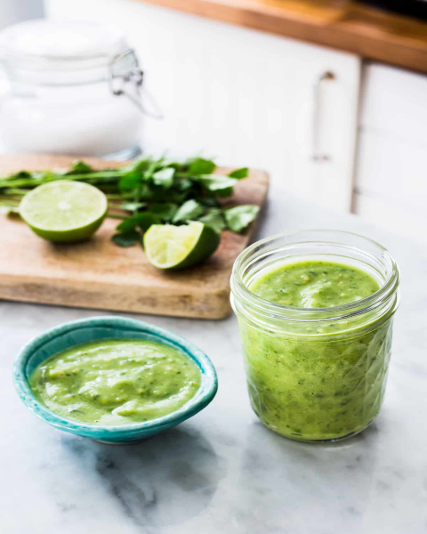

Authentic Guacamole Salsa

This guacamole salsa is not only easy to make, but can be paired with various dishes to give you that kick that you need in flavor!
This salsa is used in almost all taco stands in Mexico. The sauce has a smooth consistency can be paired not only with tacos, but also burritos, onion rings, chicken wings, and even nachos!
This sauce gained traction in central Mexico back in the 90's when some taco stands started to prepare it and adding it to their tacos.
Ingredients Needed
- 1 ripe avocado
- 1 bunch of cilantro
- Green chilies (jalapeno, or serrano)
- 1/2 medium white onion
- 1/2 lime juice
- 1 garlic clove
- salt
Instructions
- In your blender, add garlic, cilantro, onion and your chilies. Make sure to discard seeds and veins if you don't want your salsa too spicy. Add 1/4 cup of water and blend for 20-30 seconds at high.
- Add your avocado, lime juice and some more cilantro. Blend for another 10-20 seconds and test out different textures of smoothness.
- Transfer to a jar and keep it at room temperature before serving.
Notes
You can prevent your sauce from browning by adding a bit of water over the sauce (try not to mix it). Close the lid and it should be good to go. When you need to use your sauce you can carefully discard the water and give it a good stir.
Nutrition
- Serving: 1g
- Calories: 413kcal